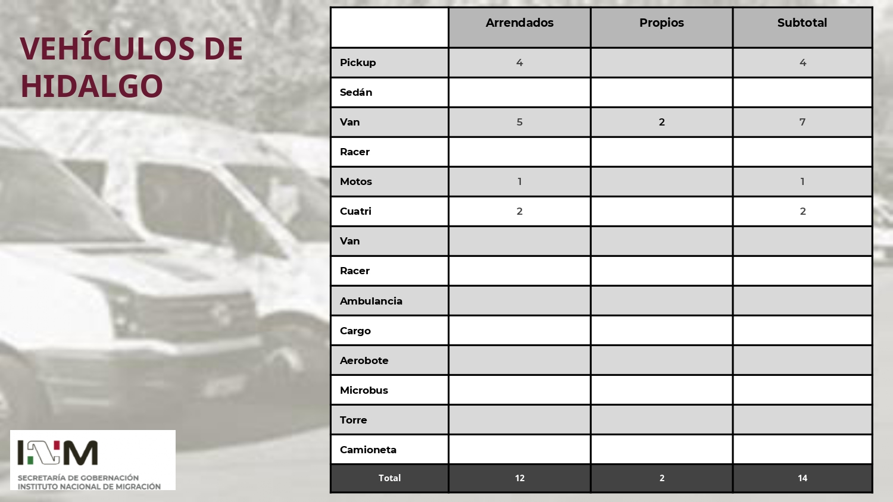

☰
Inicio
Datos Nacionales
Datos Nacionales
Plantilla de Personal
Unidades Caninas
Inmuebles
Información de ORs
Aguascalientes
Baja California
Baja California Sur
Campeche
Chiapas
Chihuahua
Coahuila
Colima
Durango
Guanajuato
Guerrero
Hidalgo
Jalisco
Estado de México
Ciudad de México
Michoacán
Morelos
Nayarit
Nuevo León
Oaxaca
Puebla
Querétaro
Quintana Roo
San Luis Potosí
Sinaloa
Sonora
Tabasco
Tamaulipas
Tlaxcala
Veracruz
Yucatán
Zacatecas
Vehiculos

Regresar